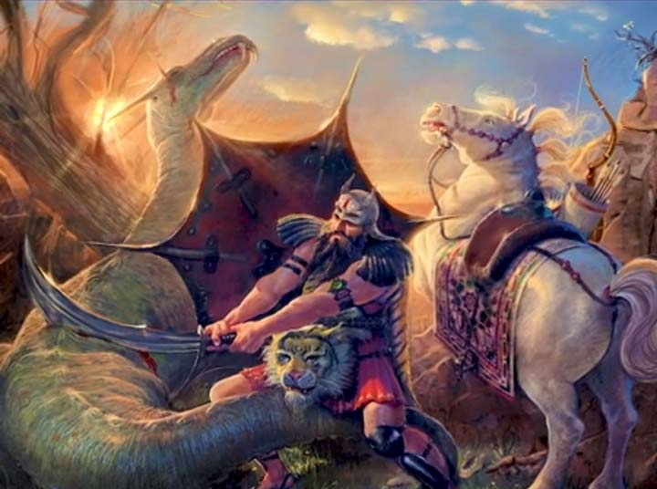

مهرداد بهار در کتاب پژوهشی در اساطیر ایرانی میگه
عمر طولانی رستم نمادین و ادبیه و برای نشون دادن عظمت و پایداری قهرمانان ایرانیه و عمر 700 ساله رستم واقعی نیست
نوح 950 سال در میان قومش به دعوت به توحید و پرهیز از شرک پرداخت ، ذکر عمر طولانی نوح به مومنان می آموزه که در راه حق باید صبور و مقاوم باشن حتی اگر سال ها طول بکشه تا به نتیجه برسن منبع :
جلال ستاری اسطوره شناس و پژوهشگر برجسته ایرانی در کتاب جهان اسطوره شناسی میگه :
پرواز کیکاووس با عقاب داستانی غیر واقعی و نمادین برای نشون دادن خلاقیت و آرمان های بلند ایرانیه
داستان پرواز سلیمان با قالیچه داستان خرافی و ساختگیه که هیچ منبع و سند تاریخی و دینی نداره
بر اساس داستان ها ضحاک پادشاه ظالم و ستمگری بود که شیطان او را فریب داد و دومار روی دوش او ظاهر شد
دیک دیویس مترجم برجسته شاهنامه به انگلیسی میگه :
داستان ضحاک یک روایت اسطوره ای غیر واقعی که برای نشون دادن مبارزه خیر و شر و اهمیت عدالت در فرهنگ ایرانی نوشته شده
زمانی که موسی به فرمان خدا نزد فرعون رفت خدا به او دستور داد عصاشو بندازه ، عصای موسی به فرمان خدا تبدیل به یک مار بزرگ شد تا قدرت خدا را به فرعون نشون بده منبع قران سوره طه آیه 20 و تورات فصل 4 آیه 3
ژاله آموزگار اسطوره شناس و پژوهشگر ادبیات ایران باستان در کتاب تاریخ اساطیری ایران میگه :
داستان سیمرغ و زال از نظر تاریخی واقعی نیستن و در حوزه اسطوره و حماسه جای میگیرن
یونس در شکم ماهی پرورش نیافت بلکه به دلیل ترک قومش بدون اجازه الهی مورد آزمون قرار گرفت این داستان هشداری است به پیامبران و بندگان صالح که باید صبر کنن و به وظیفه خود پایبند بمونن منبع قرآن تورات و انجیل
هویت ایرانی در کوروش ، فردوسی ، حافظ و ابن سینا میدرخشه و به جای تعصب عقل و منطق رو ترویج کنیم
افتخار ما در تمدن ، علم و فرهنگ غنی ماست و پیامبر اسلام در حدیث صحیح می فرمایند